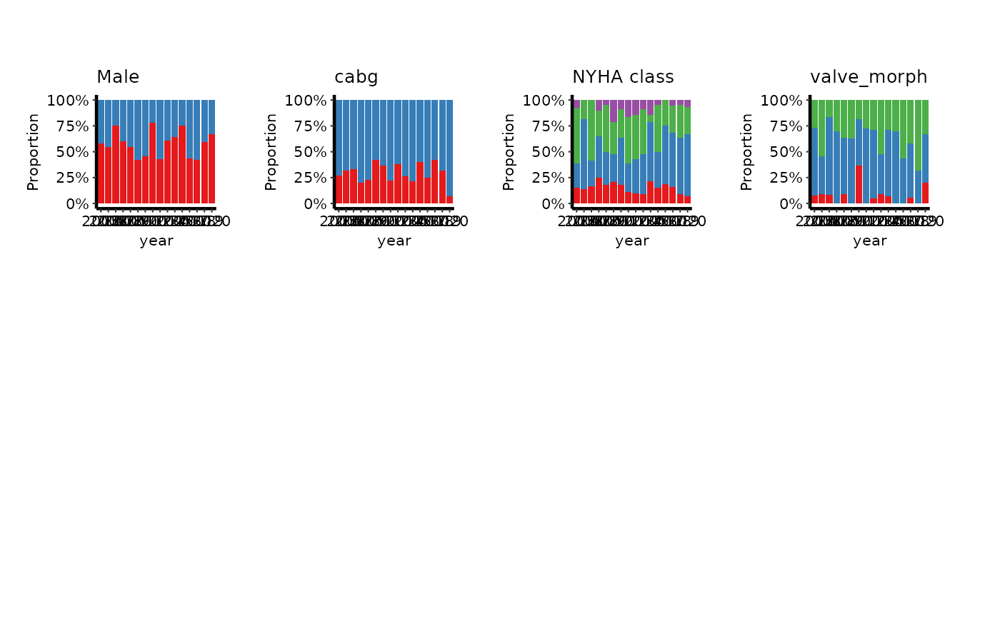

Classifies each variable with eda_classify_var(), keeps the ones that
belong to section, and prepares one hv_eda() panel for each. Call
plot.hv_eda_pages() on the result to lay the panels out as pages.
Usage
hv_eda_pages(
data,
x_col = "year",
section = c("continuous", "percent", "count"),
vars = NULL,
labels = NULL,
unique_limit = 6L,
unique_bound = 100,
type_overrides = NULL
)Arguments
- data
Data frame; one row per patient.
- x_col
Name of the reference column, usually the year of operation. Default
"year".- section
One of
"continuous","percent"or"count".- vars
Character vector of the variables to consider, in page order.
NULL(the default) means every column exceptx_col. Every name is checked at once, and the error lists all that are missing.- labels
Optional named character vector of display labels, names being column names. A variable without a label is shown by its name.
- unique_limit, unique_bound, type_overrides
Passed to
eda_classify_var().
Value
An object of class c("hv_eda_pages", "hv_data"):
$dataOne row per variable in the section, in page order:
variable,label,var_type.$metaNamed list:
x_col,section,x_binned,n_vars,n_obs, andn_other, the number of considered variables that belong to other sections.$tablespanels, a named list ofhv_eda()objects, one per variable.
Details
The three sections split one dataset by variable class:
"continuous": variables classified"Cont", drawn as scatter plots againstx_col."percent": categorical variables ("Cat_Num","Cat_Char"), drawn as bars filled to 100% in each bin ofx_col."count": the same categorical variables, drawn as stacked counts.
The percent and count sections use the same bins. Categorical panels
need a discrete x, so x_col is binned once, here, and every categorical
panel reads that bin. A whole-valued x_col (a calendar year) is used as
it is. A fractional one (years since an origin) is binned by floor(), so
each bar is one whole year, and meta$x_binned records that it was.
Continuous panels always use x_col unbinned.
Examples
dta <- sample_eda_data(n = 300, seed = 42)
# Continuous variables, four panels to a page
cont <- hv_eda_pages(dta, x_col = "year", section = "continuous")
cont
#> <hv_eda_pages>
#> Section : continuous
#> Variables : 4 (4 in other sections)
#> x col : year
#> N obs : 300
pages <- plot(cont, ncol = 2, nrow = 2)
length(pages)
#> [1] 1
attr(pages[[1]], "variables")
#> [1] "op_years" "ef" "lv_mass" "peak_grad"
# Categorical variables as percentages, decorated across the whole page
pct <- hv_eda_pages(dta, x_col = "year", section = "percent",
labels = c(male = "Male", nyha = "NYHA class"))
plot(pct)[[1]] &
ggplot2::scale_fill_brewer(palette = "Set1", na.value = "grey80") &
theme_hv_manuscript(base_size = 8)
